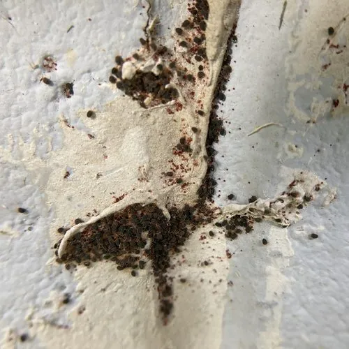

蛛形动物 · 动物界
苜蓿苔螨 Bryobia praetiosa

常见的叶螨之一，体色红褐，前足特别长，取食苜蓿、果树和草坪等植物汁液，大量发生时可造成叶片失绿。
- 分类
- 门节肢动物门纲蛛形纲目绒螨目科叶螨科属苔螨属
- 栖息环境
- 苜蓿地、果园、草坪和庭院植物上，多在叶背活动
- 地理分布
- 中国北方、欧洲和北美等温带地区
- 保护级别
- IUCN 暂无评估；中国未列入国家重点保护名录
物种志
苜蓿苔螨雌螨体长 0.6–0.8 mm，体色红褐至暗红，身体扁平，前足特别长，常向前伸出，看起来像一对触角；足上有细毛，口器较短，适合刺吸植物汁液。
它分布广泛，在中国北方、欧洲和北美都有记录，寄主包括苜蓿、三叶草、苹果、梨和多种草坪草。苜蓿苔螨多在叶片背面吸食汁液，受害叶片出现灰白色小点，严重时失绿变黄；它还能在春季大量爬到墙壁和窗台上，造成骚扰。它一年可发生多代，干燥炎热的环境有利于繁殖，雌螨把卵产在叶背和缝隙中。防治以清除杂草、保护天敌和必要时使用杀螨剂为主。目前 IUCN 暂无评估；中国未列入国家重点保护名录。
形态与习性
- 食性刺吸苜蓿、三叶草、果树和草坪汁液
- 体长0.6–0.8 mm
- 识别体红褐扁平，前足特别长
- 生活史一年发生多代，卵产在叶背和缝隙
- 危害叶片出现灰白斑点，严重时失绿变黄
- 习性干燥炎热时繁殖快，春季常爬入室内
趣味知识
- 苜蓿苔螨的前足特别长，向前伸着，看起来像两根触角。
- 它春天有时会成群爬到墙壁和窗台上，让人误以为是红蜘蛛。
- 受害叶片先出现灰白色小点，严重时整片叶子发黄。